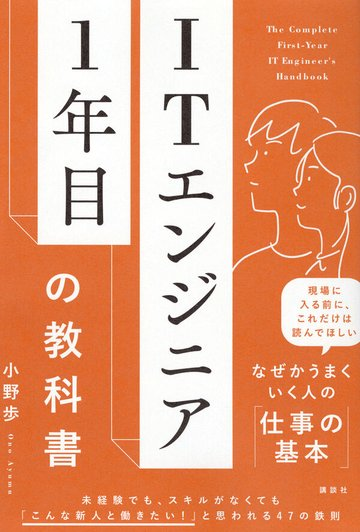
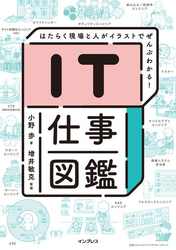

講演・研修・セミナー登壇
企業研修、大学・専門学校、カンファレンス、社内イベントなど。参加者の属性に合わせて内容を組み立てます。
- 新人エンジニア研修／内定者向け
- 採用イベント・学生向けキャリア講演
- カンファレンス基調講演・パネル登壇
イベント・セミナーの企画運営、店舗運営、IT関連事業（システム開発・プログラミングスクール運営）、キャリア支援事業、出版まで、3社で多角経営を実践。1,000人を超えるキャリア相談、延べ3,500人が参加した勉強会「tecHub」ほか主催・共催イベント、3冊の著書で得た現場のリアルを、貴社のイベント・事業・組織づくりにお役立てします。
まずは30分のオンライン相談から。ご要望次第で直接お伺いします。
 小野 歩／ 株式会社テックワークス 代表取締役
小野 歩／ 株式会社テックワークス 代表取締役
What I can do for you
「IT人材」と「キャリア」をテーマに、話す・書く・組む。どのご相談も、まずは目的をうかがうところから始めます。
企業研修、大学・専門学校、カンファレンス、社内イベントなど。参加者の属性に合わせて内容を組み立てます。
コミュニティ・メディア・人材・スクール事業に加え、イベント運営や店舗・健康領域まで。3社で培った座組みでご一緒できます。
メディア取材、インタビュー、対談、ポッドキャスト出演など。IT業界のリアルを言葉にしてお届けします。
書籍・記事の執筆、教材やキャリアコンテンツの監修。3冊の商業出版で培った編集視点でご一緒します。
エンジニア採用がうまくいかない、育成が仕組み化できない。1,000人超の相談から見えた実像をもとにお話しします。
会社員として働きながら独立を準備し、チーム作りと事業作りを重ねてきた経験をもとに、キャリアと独立の相談に応じています。
依頼内容が固まっていなくても大丈夫です。「こんなことできますか？」の壁打ちから、ぜひお声がけください。
Speaking Topics
いずれも、対象者・目的・時間に合わせてカスタマイズします。「こういう話をしてほしい」というご要望からの組み立ても歓迎です。
THEME 01
技術の変化が速い時代に、何を学び、どう価値を出すか。現場の変化と、これから求められる力を具体例で語ります。
THEME 02
著書をベースに、最初の1年でつまずくポイントと乗り越え方を。新人研修・内定者フォローで多くご依頼をいただく内容です。
THEME 03
『IT仕事図鑑』をもとに、細分化したIT職種の全体像を整理。進路選択やキャリア面談の前段としてご活用いただけます。
THEME 04
伸びる人は何が違うのか。キャリア相談の現場で繰り返し出会ってきたパターンを、実例ベースでお話しします。
THEME 05
勉強会「tecHub」をゼロから育てた実践知。人が集まり、続く場をどう設計するかを、失敗も含めて共有します。
THEME 06
働きながら独立を準備し、チーム作りと事業作りを重ねて多角経営に至るまで。独立を考える人・新規事業に取り組む人へ。
THEME 07
「自社の課題に寄せてほしい」「参加者の悩みに答える形にしたい」など、事前ヒアリングのうえ構成からご提案します。
Voices
講演・協業でご一緒した方からいただいた感想です。
“
新人研修でお願いしました。「現場で本当に起きること」を具体的に話していただけたので、受講者の反応がまったく違いました。翌年も継続でお願いしています。
IT企業 人事ご担当者様
“
カンファレンスに登壇いただきました。事前のすり合わせが丁寧で、当日は会場の熱量が明らかに上がりました。参加者アンケートでも満足度が最上位でした。
カンファレンス主催者様
“
イベント共催でご一緒しました。「まずやってみましょう」と動いてくださるので進行が速く、次の企画の話まで自然に広がりました。
共催パートナー企業様
※ 上記は構成イメージのサンプル文です。公開前に実際にいただいた声へ差し替えます（掲載許諾の取得が必要です）。
 小野 歩／ 講演「若手ITエンジニアを取り巻く環境」より
小野 歩／ 講演「若手ITエンジニアを取り巻く環境」より
氏名：小野 歩（おの あゆむ）
現職：株式会社テックワークス 代表取締役（ほか2社を経営）
出身：大分県大分市／九州大学大学院 卒業
経歴：NEC でITエンジニア → 2009.11 イベント事業で独立（1社目）→ 2017.12 店舗運営（2社目）→ 2022.07 テックワークス（3社目）
事業：イベント・セミナー企画運営／店舗運営（セレクトショップ・整体院）／IT関連事業（システム開発・プログラミングスクール運営）／キャリア支援／出版
活動：執筆・講演・キャリア支援・独立支援・コミュニティ「tecHub」主宰
座右の銘：不断挑戦
About
やったことのないことにも、まず手を挙げてみる。その積み重ねが、著書3冊とコミュニティにつながりました。
大分県大分市に生まれ、九州大学大学院を卒業後、NECに入社。ITエンジニアとしての基礎を培いながら、並行して独立の準備を進めていました。
独立後は、チーム作りと事業作りを追求。2009年11月に1社目としてイベント・セミナーの企画運営会社を創業し、営業支援とあわせて経営基盤をつくりました。2017年12月には2社目として店舗運営会社を立ち上げ、漢方・薬膳のセレクトショップと整体院を運営。2022年7月に3社目の株式会社テックワークスを創業しました。現在はイベント事業、店舗運営事業、IT関連事業（システム開発・プログラミングスクール運営）、キャリア支援事業、出版と、多角的に事業を展開しています。その経験を活かし、キャリア支援と独立支援にも取り組んでいます。
これまでに1,000人を超えるエンジニアのキャリア相談に応じ、IT勉強会・交流会「tecHub」を秋葉原で主宰。主催・共催イベントの参加者は延べ3,500人を超えます。その現場で得た知見を、3冊の著書としてまとめてきました。近年は企業・大学での講演やウェビナー出演、メディア出演を通じて活躍の場を広げています。
「願望は知識から生まれる」。選択肢を知らなければ、人は願うことすらできない。だからこそ、話す・書く・つなぐという形で「知るきっかけ」を届け続けています。
Q. 講演で大事にしていることは？
A. 一般論で終わらせないことです。事前に「参加者が明日どうなってほしいか」を必ずうかがい、その一点に向けて構成します。
Q. どんな相談が多いですか？
A. 新人研修と採用イベントの登壇、そしてコミュニティ絡みの共催企画が多いです。組織づくりの壁打ちも歓迎です。
Q. 直接会うことはできますか？
A. はい。毎月開催しているtecHubにお越しいただければ、その場でお話しできます。オンライン相談も承っています。
Partnership
「IT業界で働く人の可能性を広げる」という一点に向かえるなら、規模や業種は問いません。まずは意図をぶつけてください。
1社目は、企画から当日の設営・運営・スタッフ派遣まで一貫して担うイベント／セミナー運営会社です。tecHubとの共催はもちろん、貴社イベントの企画運営そのものもご相談いただけます。
記事・書籍・教材・動画などの共同制作。著者・実務者の両面から、現場に届く言葉に落とし込みます。
エンジニア採用、リスキリング、スクール連携など。テックワークスの開発チームとスクール運営の知見を活かせます。
システム開発の受託、プロダクトの立ち上げ支援など、事業としてのご相談も承っています。
Track Record
企業研修、カンファレンス、動画番組への出演、出版記念イベントの登壇など。
Event Production
1社目のイベント企画・運営会社（2009年11月設立）で手がけてきたイベントです。企画から設営・運営・スタッフ派遣まで一貫して担当しています。
Books
講演内容のベースになっている3冊です（刊行順）。事前にお読みいただくと、当日の話がより深まります。

日経BP ／ 2024年 ／ 1冊目
Amazon 11部門1位 ／ ITエンジニア本大賞2025 ベスト10
会社員・フリーランス・起業まで、働き方の選択肢を網羅的に整理。
Amazonで探す →
講談社 ／ 2026年 ／ 2冊目
Amazonベストセラー入り ／ 都内大型書店 週間ベストセラー
最初の1年でつまずくポイントと、現場で求められる立ち回りを解説。
Amazonで探す →
Flow
お問い合わせから実施まで、通常2〜3週間程度です。お急ぎの場合もご相談ください。
フォームから概要をお送りください。原則2営業日以内にご返信します。内容が固まっていない段階でも構いません。
目的・対象者・当日のゴールをうかがいます。テーマや構成、条件のすり合わせもこの場で行います。
ご要望に合わせて資料を用意し、当日に臨みます。終了後もアンケート共有や次の企画のご相談を歓迎しています。
FAQ
内容・時間・形式・ご予算によって個別にご相談しています。教育機関や非営利のイベントについても、まずはお気軽にご相談ください。
可能です。オンライン／ハイブリッドともに対応しています。地方での対面開催についても、日程が合えばお伺いします。
1〜2か月前にご相談いただけると調整しやすいです。直近のご相談も、日程が空いていればお受けできる場合があります。
はい。事前ヒアリングのうえ、参加者の属性や当日のゴールに合わせて構成し直します。既存テーマの組み合わせも可能です。
もちろんです。オンライン相談のほか、毎月開催しているIT勉強会・交流会「tecHub」にお越しいただければ、その場で直接お話しできます。
Contact
講演・研修、協業、取材、執筆、組織のご相談まで。内容が固まっていない段階のお問い合わせも歓迎です。
依頼内容が固まっていなくても構いません。目的だけ教えていただければ、こちらから形にするお手伝いをします。